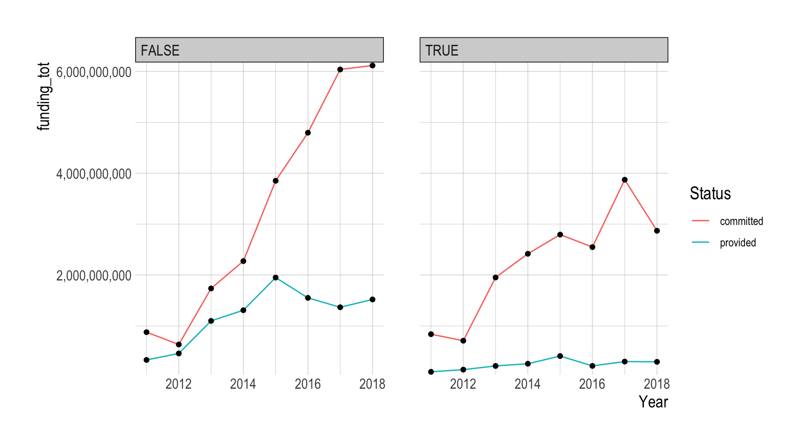
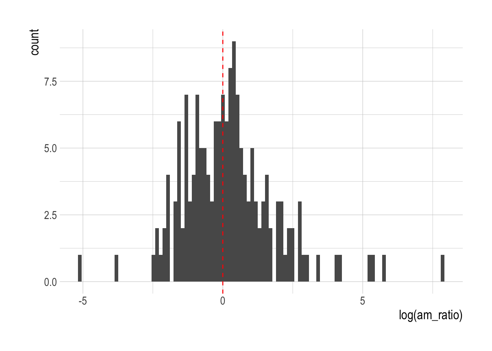
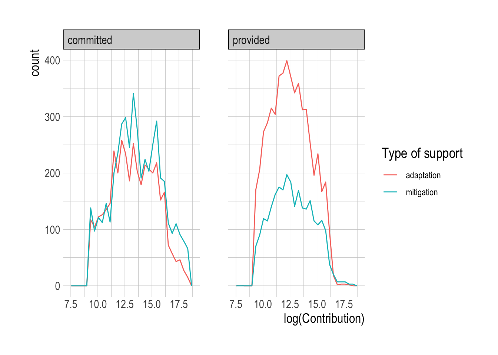
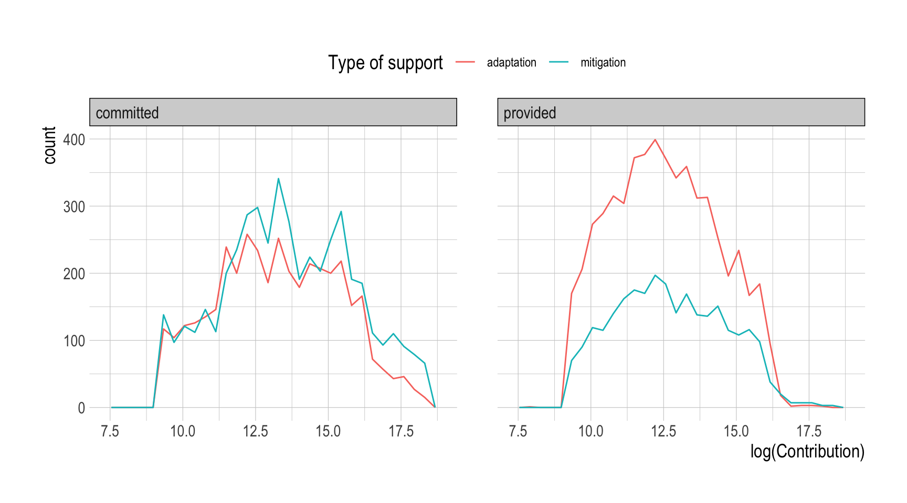
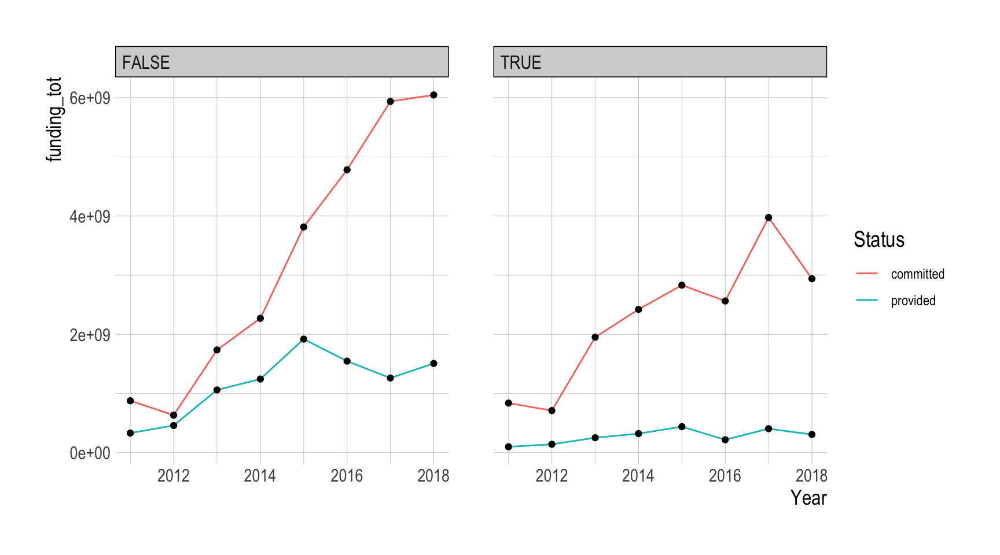

path <- 'https://bcdanl.github.io/data/climate_finance_energy.csv'
climate_finance <- read_csv(path)DANL 200: Classwork 8 - Data visualization and transformation
Question 1. Climate Finance
Climate finance refers to local, national or transnational financing—drawn from public, private and alternative sources of financing—that seeks to support mitigation and adaptation actions that will address climate change (https://unfccc.int/topics/introduction-to-climate-finance).
- Mitigation involves taking actions to reduce the emissions of greenhouse gases that are responsible for climate change.
- Adaptation involves taking actions to reduce the actual or expected damages from climate change (https://climate.nasa.gov/solutions/adaptation-mitigation).
Load the data.frame for Question 1.
- A unit of observation in
climate_financedata.frame is a climate change project.
Variable Description
Party: a party (country) that provides a funding contribution to recipient country/region for their cliamte change project.Recipient country/region: Recipient country or regionProject/programme/activity: Details in the climate change projectType of support:adaptationif the climate change project is related to adaptation project.mitigationif the climate change project is related to mitigation project.
Year: Year that funding contribution is committed or provided.Contribution: An amount of funding contribution for the climate change project (in USD).Status:committedif a party commits to providing the funding contribution for the climate change project, but the funding contribution is NOT actually provided.providedif the funding contribution was provided for the climate change project.
Energy:TRUEif the project is energy-related;FALSEotherwise.
Q1a
How many parties have provided positive financial contributions to other countries/regions for their adaptation projects for every year between 2011 and 2018?
Q1a <- climate_finance %>%
filter(Status == "provided", # filter by provided status
`Type of support` == "adaptation") %>% # filter by adaptation type
group_by(Party, Year) %>% # group by Party and Year
summarise(Contribution = sum(Contribution, na.rm = T)) %>% # calculate total contribution
filter(Contribution > 0) %>% # keep rows with non-zero contribution
group_by(Party) %>% # group by Party (unnecessary step)
count() %>% # count number of observations
filter(n == 2018 - 2011 + 1) %>% # keep Parties with 8 observations
select(Party) %>%
distinct() # Remove duplicate observations in a data.framenrow(Q1a)[1] 8Q1b
Provide both (1) ggplot code and (2) a simple comment to describe how the yearly trend of total funding Contribution varies by Energy and Status.
climate_finance %>%
group_by(Energy, Status, Year) %>%
summarise(funding_tot = sum(Contribution, na.rm = T)) %>%
ggplot(aes(x = Year, y = funding_tot)) +
geom_line(aes(color = Status)) +
geom_point() +
facet_wrap(Energy ~.) +
scale_y_comma()
The size of
committedfunding has been rapidly increasing, while the size ofprovidedfunding is not.The size of
providedfunding has been slowly increasing for non-energy sector, while that has been relatively sluggish for energy sector.It is easier to make a promise than to keep it.
The gap in
providedfunding size between the energy and the non-energy sectors is partly because energy-related projects usually require relative much larger upfront cost.
Q1c
For each party, calculate the total funding contributions that were provided for mitigation projects for each year.
Q1b <- climate_finance %>%
filter(Status == "provided",
`Type of support` == "mitigation") %>%
group_by(Party, Year) %>%
summarise(Contribution = sum(Contribution, na.rm = T))Q1d
For each party, calculate the ratio between adaptation contribution and mitigation contribution for each type of Status for each year.
Q1c <- climate_finance %>%
group_by(Party, Year, Status, `Type of support`) %>%
summarise(Contribution = sum(Contribution, na.rm = T)) %>%
filter(Contribution != 0) %>%
group_by(Party, Year, Status) %>% # this group_by() is not necessary, but it doesn't hurt
mutate(lag_Contribution = lag(Contribution), # calculate lagged Contribution
am_ratio = lag_Contribution / Contribution ) %>% # calculate adaptation/mitigation ratio
filter(!is.na(am_ratio)) %>% # remove rows with missing values in am_ratio
rename(mitigation = Contribution, # rename columns for clarity
adaptation = lag_Contribution) %>%
select(-`Type of support`) # remove Type of support columnQ1c <- climate_finance %>%
group_by(Party, Year, Status) %>% # group by Party, Year and Status
summarise(adaptation = sum(Contribution[`Type of support` == 'adaptation'], na.rm = T), # sum the contributions where the Type of support is adaptation
mitigation = sum(Contribution[`Type of support` == 'mitigation'], na.rm = T) # sum the contributions where the Type of support is mitigation
) %>%
filter(adaptation != 0, mitigation != 0) %>% # filter out rows where either adaptation or mitigation is 0
mutate(am_ratio = adaptation / mitigation ) # calculate the ratio of adaptation to mitigation and store it in a new column named am_ratioQ1e
Provide both (1) ggplot code and (2) a simple comment to describe the distribution of the ratio between adaptation contribution and mitigation contribution, which is calculated in Q1d.
ggplot(Q1c, aes(x = am_ratio)) +
geom_histogram(bins = 75) +
geom_vline(xintercept = 1, color = 'red', lty = 2)
ggplot(Q1c, aes(x = log(am_ratio))) +
geom_histogram(bins = 75) +
geom_vline(xintercept = 0, color = 'red', lty = 2)
- Here the comments are not provided.
Q1f
Provide both (1) ggplot code and (2) a simple comment to describe how the distribution of Contribution varies by Type of support and Status.
ggplot(climate_finance,
aes(color = `Type of support`, x = log(Contribution))) +
geom_freqpoly() +
facet_wrap(.~ Status)
ggplot(climate_finance,
aes(color = `Type of support`, x = log(Contribution))) +
geom_freqpoly() +
facet_wrap(.~ Status) +
theme(legend.position = 'top')
- Here the comments are not provided.